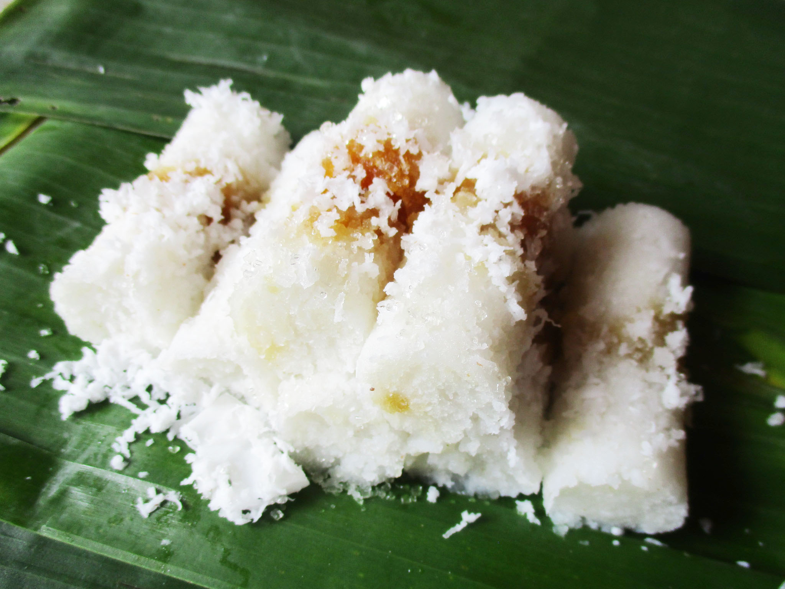

KUE PUTU

Kue putu adalah jenis kudapan tradisional Indonesia berupa kue dengan isian gula jawa, dibalut dengan parutan kelapa, dan tepung beras butiran kasar.
Kue ini di kukus dengan diletakkan di dalam tabung bambu yang sedikit dipadatkan.
Kue putu ini umumnya dihidangkan dalam warna putih dan hijau. Sedangkan dalam varian Putu Bugis (berasal dari Sulawesi Selatan), biasanya kue dibuat menggunakan bahan seperti beras ketan hitam tanpa gula sehingga menghasilkan warna kue putu yang gelap cenderung hitam.
Variasi Kue Putu
- Putu Ayu Gula Jawa
- Putu Ayu Ketan Hitam
- Putu Ayu Bihun
- Putu Mayang
- Putu Pesse
- Putu Cangiri
- Putu Keju
Bahan membuat kue putu
Bahan putu:
- 400 gr tepung beras
- 200 ml air pandan
- 1/2 sdt garam halus
- secukupnya pasta pandan
- secukupnya pewarna kuning
bahan isian:
Bahan taburan:
- 300 gr kelapa parut
- 1/2 sdt garam
- 2 lembar daun pandan
Cara Membuat:
- Bikin cetakan, siapkan 1 lembar daun pisang, kemudian gunting daun pisang selebar botol pewarna makanan, lalu gulung daunnya sampai membentuk seperti cetakan bambu, lalu clip dengan steples,. Lakukan hingga selesai.
- Panaskan kukusan, siapkan wadah anti panas, lalu alasi dengan daun pisang, masukkan tepung beras, kemudian kukus tepung beras selama 20-25 menit sampai matang.
- Setelah tepung selesai dikukus, pindahkan ke wadah, aduk sebentar supaya panasnya menghilang, lalu masukkan garam, aduk rata dan masukkan campuran air pandan, pasta pandan dan pewarna kuning, sedikit demi sedikit sambil diaduk menggunakan tangan, sampai adonannya berbutir.
- Saring adonannya dengan cara diaduk sambil ditekan-tekan.
- Setelah adonan disaring, masukkan beberapa sendok ke dalam daun pisang yang sudah di bentuk, lalu masukkan gula merah yang sudah disisir halus, lalu timpa lagi dengan adonan tepung sampai penuh. Ratakan.
- Panaskan kukusan dan kukus selama 10-15 menit, atau sampai matang.
- Dalam wadah, masukkan kelapa parut, garam, dan daun pandan, lalu kukus sampai matang.